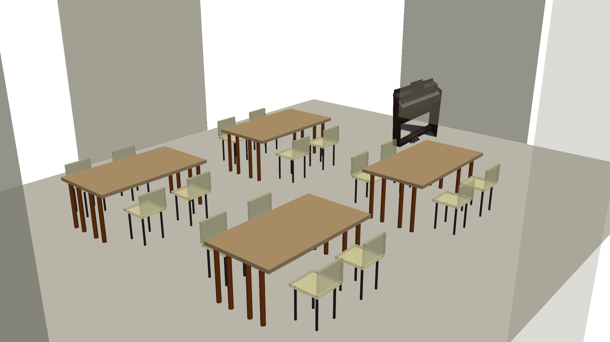

💡 発想
集会所にピアノがあったら、どうでしょうか？
音楽は、言葉を超えて人と人をつなぎます。 子どもから高齢者まで、ピアノを囲んで集まり、演奏を楽しんだり、ちょっとした練習をしたり、 ときにはミニコンサートを開いたり――そんな光景が、集会所にあったら素敵ではないでしょうか。
観音台カフェで、ピアノの生演奏が流れていたら？ クーリングシェルターとして利用するとき、BGMとして心地よい音楽が聴けたら？ 子育て世代の親子が集まって、一緒に歌いながら遊べたら？
ピアノは、ただの楽器ではありません。 人が集まりたくなる場所をつくるための、文化的なインフラです。
🎹 現実的な選択肢：電子ピアノ
集会所にピアノを設置するとき、現実的な選択肢は電子ピアノです。
- 省スペース — 集会所の一角に設置可能
- 音量調整 — ヘッドホンを使えば、周囲を気にせず練習できる
- 維持管理が簡単 — 調律不要、故障も少ない
- 手頃な価格 — 数万円〜十数万円で購入可能
電子ピアノは、個人でも買える価格帯ですが、集会所に置くことで、 練習場所を必要とする人、ちょっと弾いてみたい人、イベントで使いたい人 など、多くの人が共同で利用できるようになります。
これこそが、共同投資の意義ではないでしょうか。
📐 配置イメージ
集会所のホールに、電子ピアノとテーブル席を配置した場合のレイアウト例です。 ピアノは壁際に設置し、通常の会議・イベント時は邪魔にならない配置としています。

▲ 集会所ホールのレイアウト例：電子ピアノ+スツール（壁際）、会議テーブル4セット（16名分）
このように、電子ピアノは集会所の機能を損なうことなく設置できます。 会議や勉強会、カフェイベント、音楽練習など、多目的な利用が可能です。
🌟 期待される活用例
1. ミニコンサート
地域の音楽愛好家、指導者、子どもたちが演奏を披露する場として。 観客も演奏者も、世代を超えて交流できます。
2. 練習場所の提供
自宅にピアノがない人、音を気にせず練習したい人が利用できます。 集会所の空き時間を有効活用することで、地域住民にとって価値ある資源になります。
3. カフェでのBGM・生演奏
観音台カフェの開催時、ピアノの生演奏があれば、より温かく魅力的な空間になります。 地域の演奏者に協力してもらうことで、プロを呼ばなくても身近で心地よい音楽を楽しめます。 「ピアノがあるカフェ」と「ないカフェ」、どちらに行きたいですか？
4. 子育て世代の交流
親子で歌いながら遊ぶ、音楽を通じた交流の場として。 子どもが音楽に触れる機会を増やすことで、地域の文化的な豊かさも育まれます。
🔧 実現可能性
費用
電子ピアノは、入門モデルで3〜5万円、中級モデルで10〜15万円程度。 スタンドやヘッドホンを含めても、大きな負担にはなりません。
💡 具体的な商品例（価格帯別）
- 入門モデル（5〜7万円台） CASIO Privia PX-S1100 — 88鍵、スリムボディ、持ち運び可能。集会所での利用に最適。
- 中級モデル（10〜20万円台） 木製鍵盤や高品位スピーカー搭載。本格的な練習・イベント演奏に対応。
- 上級モデル（20万円以上） グランドピアノに近いタッチと音質。専門家による演奏や指導にも使用可能。
最寄りの楽器店 島村楽器イオンモール土浦店 では、常時30台以上の電子ピアノを展示・試奏可能です。 実際に音やタッチを確かめて選べます。
💰 費用負担について
集会所は第一自治会と第二自治会が共同で利用しているため、
電子ピアノの購入費用も2つの自治会で折半（または戸数割）することで、
各自治会の負担は実質的に半額になります。
例えば6万円のモデルなら、各自治会3万円の負担で導入できます。
管理・運用
電子ピアノは調律不要で、故障も少ないため、維持管理は比較的簡単です。 利用ルール（予約制、時間制限など）を決めれば、トラブルも最小限に抑えられるでしょう。
騒音対策
音量調整機能があり、ヘッドホンを使えば周囲への影響はゼロです。 イベント時のみスピーカーで音を出すなど、柔軟に対応できます。
人的リソース
地域には、音楽の専門家や指導者がいます。 もしピアノが設置されれば、ミニコンサートでの演奏や、初心者へのアドバイスなど、 協力を得られる可能性があります。
プロの演奏家を呼ばなくても、地域の人材を活かすことで、 より身近で温かい音楽の場を作ることができるでしょう。
🏠 提案の整合性
この提案は、集会所を地域の文化・交流拠点にするという 大きな方向性の一部です。
Wi-Fi・ITインフラの整備と合わせて考えれば、 イベントの告知や記録、オンライン配信なども可能になります。 ソーラーカーポートで発電した電力を、 電子ピアノの電源として活用することも考えられます。
個々の提案がバラバラではなく、全体として整合的に進むことで、 集会所はもっと魅力的な場所になるはずです。
📚 関連情報
| モダンな集会所に向けて（目次） | トップページに戻る |